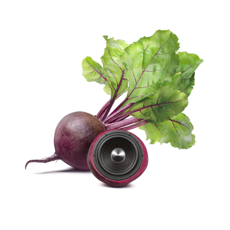

Beatroot ♪AKA; Loki Hornsby |
 |
| ○ Castle batch | | Student |
| ○ Priory community school | | Student, GCSE (Drama/Distinction, Science/6, Computing/9, English/5, Maths/5, Spanish/5) |
| ○ Boomsatsuma | | Student, AS level in creative media at distinction level |
| ○ Sea Salt (Fish and chip shop) | | Counter assistant |
| ○ Wickes | | Customer service assistant |
| ○ SBFM (Pets at home) | | Cleaning operative |
| ○ Morrisons warehouse | | Warehouse operative |
| ○ Rotamec and Strode college | | Apprentice engineer |
| ○ Mingle cafe | | Volunteer |